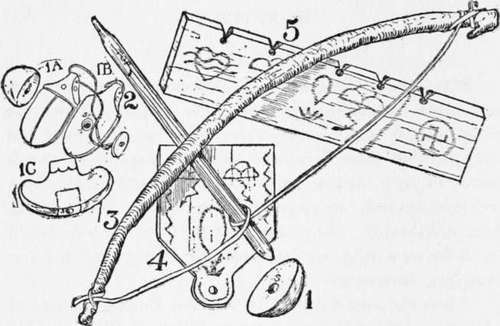
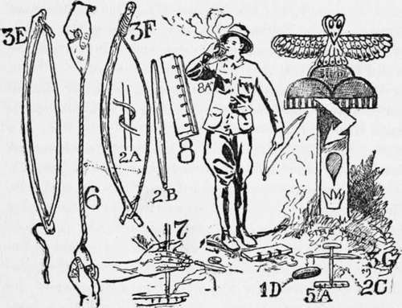

Chapter I. Fire Making By Friction
Description
This section is from the book "The Book Of Camp-Lore And Woodcraft", by Dan Beard. Also available from Amazon: The Book of Camp-Lore and Woodcraft.
Chapter I. Fire Making By Friction
How To Make A Fire-Board, Bow, Drill And Thimble Indian Legend Of The Source Of Fire Record Fire-Makers Rubbing-Stick Outfit Eskimo Thimble
Bow, Bow-String, Thimble, Fire-Board, Fire-Pan Tinder, Charred Rags, Puff Balls Fire-Makers Of The Balkan
Fire Without A Bow, Co-Li-Li, The Fire Saw Fire Pumping Of The Iroquois Pyropneumatic Apparatus
Fire Making By Friction
When the "what-is-its" of Pithecantropus erectus age and other like hob-goblin men were moping around the rough sketch of an earth, there were no camp-fires; the only fire that these creatures knew was that which struck terror to their hearts when it was vomited forth from volcanic craters, or came crashing among them in the form of lightning. No wonder that the primitive men looked upon fire as a deity, no doubt an evil deity at first but one who later became good.
When the vast fields of ice covered Europe during the glacier period and forced men to think or die, necessity developed a prehistoric Edison among the Neanderthal men, who discovered how to build and control a fire, thus saving his race from being frozen in the ice and kept on cold storage, like the hairy rhinoceros and elephant of Siberia.
The fire of this forgotten and unknown glacier savage was the forerunner of our steam-heaters and kitchen ranges; in fact, without it we could have made no progress whatever, for not only the humble kitchen range, but the great factories and power-plants are all depending upon the discovery made by the shivering, teeth-chattering savage who was hopping around and trying to keep himself warm among the European glaciers.
But we people of the camp-fires are more interested in primitive fires just as the Neanderthal men built them, than we are in the roaring furnaces of the steel works, the volcano blast furnaces, or any of the scientific, commercialized fires of factory and commerce.
What we love is the genial, old-fashioned camp-fire in the open, on the broad prairie, on the mountainside, or in the dark and mysterious forests, where, as our good friend Dr. Hornaday says,
We will pile on pine and spruce, Mesquite roots and sagebrush loose. Dead bamboo and smelly teak, And with fagots blazing bright Burn a hole into the night—
Not long ago the author was up North in the unmapped lake country of Canada, and while camping on the portage between two wild and lonely lakes, Scout Joe Van Vleck made himself a fire outfit consisting of Fig. 1, a thimble made of a burl, with which to hold Fig. 2, the spindle made of balsam. Fig. 3 is a bow cut from a standing bush; not an elastic bow, such as one uses with which to shoot arrows, but a bow with a permanent bend to it. Fig. 4 is the fire-pan which is placed under the fire-board to catch the charcoal dust as it falls through the slot when the spindle is twirled.
Fig. 5 is the fire-board, made of a dead balsam tree which was standing within three yards of the camp-fire.
In order to make his fire it was necessary for our Scout to have some tinder, and this he secured from the bark of cedar trees, also within a few yards of our camp. This indeed was a novel experience, for seldom is material so convenient. The fire was built in a few seconds, much to the wonderment of our Indian guide, and the delight of some moose hunters who chanced to be crossing the portage on which our camp was located.
It was an American, Dr. Walter Hough of the U. S. National Museum of Washington, who first proved that a modern up-to-date civilized white man can make a fire with rubbing-sticks, as well as the primitive man. But it was an Englishman who popularized this method of making fire, introduced it among the Boy Scouts of England and America, and the sister organizations among the girls.
According to the American Indian legend the animal people who inhabited the earth before the Redmen lived in darkness in California. There was the coyote man, the vulture man, the white-footed mouse man, and a lot of other fabled creatures. Away over East somewhere there was light because the sun was over there, and the humming-bird man among the animal people of our Indians is the one, according to Dr. Merriman, who stole the fire from the East and carried it under his chin. The mark of it is still there. The next time you see a humming-bird note the brilliant spot of red fire under his chin.
Now you understand why the king-pin in fire making at your camp deserves the title of Le-che-che (the humming-bird).
If one gets the fire from a fire-board, spindle and bow in record time, then the title of Le-che-che is all the more appropriate because it was the humming-bird man who hid the fire in the oo-noo tree, and to this day, when the Indian wants fire, he goes to the oo-noo (buckeye) tree to get it; that is, provided he has no matches in the pockets of his store clothes and that some white boy, like the Scout previously mentioned, has taught him how to make fire as did the Indian's own ancestors. But even then the oo-noo* wood must be dead and dry.
Austin Norton of Ypsilanti, Michigan, April, 1912, made fire in thirty-nine and one-fifth seconds; Frederick C. Reed of Washington, in December, 1912, made fire in thirty-one seconds; Mr. Ernest Miller of St. Paul made fire in thirty seconds, but it was Mr. Arthur Forbush, one of the author's Scouts of the Sons of Daniel Boone (the scout organization which preceded both the English Boy Scouts and the Boy Scouts of America) who broke the record time in making fire with "rubbing-sticks" by doing it in twenty-nine seconds at the Sportsman's Show at Madison Square Garden, New York. Mr. Forbush made this record in the presence of the author and many witnesses. Since then the same gentleman reduced his own world-record to twenty-six and one-fifth seconds ; by this time even that record t may have been broken.
The "rubbing-stick" is a picturesque, sensational and interesting method of building a fire, but to-day it is of little practical use outside of the fact that it teaches one to overcome obstacles, to do things with the tools at hand, to think and act with the vigor, precision and self-confidence of a primitive man.
* It is not the buckeye of the Ohio and Mississippi Valley, but is the out buckeye of California, Aesculus Californica.
# The record is now eleven seconds.

Continue to:
- prev: Foreword
- Table of Contents
- next: "Rubbing-Stick" Outfit